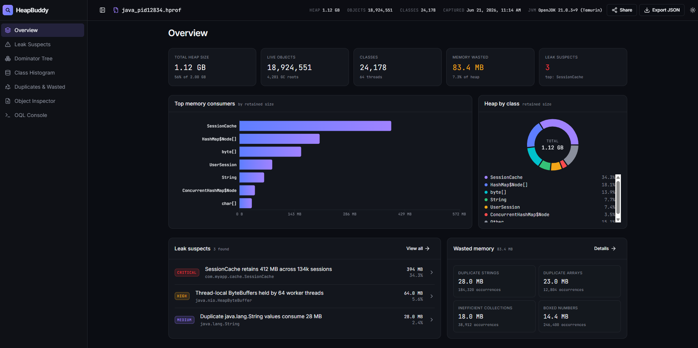

Find the leak.
Keep the heap dump.
HeapBuddy is a self-hostable analyzer for Java & Android .hprof heap dumps.
Leak suspects with GC-root chains, retained-size dominator trees, an object inspector and OQL —
processed entirely on your machine. Your dump never leaves it.
docker run --rm -p 8080:8080 ghcr.io/sachin-handiekar/heapbuddy:latest
http://localhost:8080 and drop in a .hprof file.
Heap analysis without the heavy desktop install — or the privacy risk.
A heap dump is a snapshot of live memory: session tokens, request bodies, customer data. HeapBuddy was built so you never have to trade that away for a good report.
Private by design
Dumps are parsed locally. No third-party calls, no telemetry, no account. Binds to 127.0.0.1 by default.
One binary, zero setup
A single static Go binary embeds the React UI and JSON API. Or run the distroless Docker image — one command.
Lean by default
A fast, low-memory pass covers leaks, histogram, inspector and waste. The heavy dominator tree is opt-in — you don't need a huge box to open a dump.
Self-host for the whole team
Run it once on an internal box behind your firewall and everyone gets a shared web UI. Concurrency limits and upload caps built in.
CI-friendly CLI
heapbuddy analyze --json writes clean JSON to stdout, diagnostics to stderr, and exits non-zero on failure.
Real analysis, honest output
True retained sizes via a Lengauer–Tarjan dominator tree over the object graph. Views that can't be served are hidden, never faked.
An interactive report, backed by a real parse of your dump.
Seven views take you from "the heap is big" to "this field on this object is why."
Per-class instance counts, shallow size and class-aggregated retained size.
Duplicate strings, inefficient collections, boxed primitives and duplicate arrays — with bytes you can reclaim.
Query the heap with a SQL-like language, MAT-style.
From OutOfMemoryError to root cause in three steps.
Capture a heap dump
Grab one on demand from a running JVM, or have the JVM write one automatically when it runs out of memory.
# on demand (modern JDKs) $ jcmd <pid> GC.heap_dump app.hprof # automatically on OOM $ java -XX:+HeapDumpOnOutOfMemoryError \ -XX:HeapDumpPath=/dumps -jar app.jar # Android: convert to standard HPROF $ hprof-conv leak.hprof app.hprof
Start HeapBuddy
Run the container or binary locally. It listens on localhost and serves the UI and API on one port.
$ docker run --rm -p 8080:8080 \ ghcr.io/sachin-handiekar/heapbuddy:latest # or the binary, with deep analysis on $ heapbuddy serve --enable-advanced-analysis
Upload & explore
Drop the .hprof into the browser — or script it against the JSON API — and follow the leak.
# open http://localhost:8080, or: $ curl -F "file=@app.hprof" \ localhost:8080/api/analyze → {"id":"rpt_…"} $ curl localhost:8080/api/reports/rpt_…/leaks
heap dump
Pick your flavour. Be analyzing in a minute.
Docker image, prebuilt Linux binaries, or build from source with Go 1.22+.
# try it docker run --rm -p 8080:8080 ghcr.io/sachin-handiekar/heapbuddy:latest # run as a team service, with advanced views docker run -d --name heapbuddy --restart unless-stopped \ -e HEAPBUDDY_ENABLE_ADVANCED_ANALYSIS=1 \ -p 8080:8080 ghcr.io/sachin-handiekar/heapbuddy:latest
Multi-arch (amd64 / arm64) distroless image on GHCR, built on every tagged release.
# grab linux_amd64 or linux_arm64 from Releases, then: tar -xzf heapbuddy_<version>_linux_amd64.tar.gz ./heapbuddy serve # → http://localhost:8080
Prebuilt archives are on the GitHub Releases page. The binary embeds the full web UI.
git clone https://github.com/sachin-handiekar/HeapBuddy.git cd HeapBuddy/backend make build # builds UI, embeds it, compiles ./heapbuddy ./heapbuddy serve # Go-only build (API + CLI, no embedded UI) make build-api-only
Requires Go 1.22+ and Node 18+ (or bun) for the UI build.
# human-readable summary heapbuddy analyze heap.hprof # machine-readable, pipe into jq / CI checks heapbuddy analyze --json heap.hprof | jq . # retention chains for large objects heapbuddy analyze --find-leaks --max-chain 15 heap.hprof
Diagnostics go to stderr so stdout stays clean JSON; non-zero exit on failure.
| serve flag | what it does |
|---|---|
| --addr | Listen address. Defaults to 127.0.0.1:8080; warns if exposed. |
| --enable-advanced-analysis | Turns on the Dominator Tree and OQL views. |
| --max-upload | Upload size cap (default 8 GiB). |
| --max-concurrent | Dumps analyzed at once; excess gets 429. |
| --mem-limit | Soft memory limit — GC works harder near it. |
| --temp-dir | Where dumps are spooled. Point at tmpfs or an encrypted volume. |
| --graph-cache | Memory-map the reference graph off the Go heap. |
Every flag also has a HEAPBUDDY_* environment variable. Explicit flags win.
Ask the heap questions.
A practical subset of MAT-style OQL: projections, COUNT(*), object literals, WHERE with AND/OR, and LIMIT.
SELECT COUNT(*) FROM java.lang.String SELECT s FROM java.lang.String s WHERE s.length > 100 SELECT { addr: m.address, retained: m.retained } FROM java.util.concurrent.ConcurrentHashMap m WHERE m.retained > 50000
Automate everything.
Analyze once, get a report id, then read any section as JSON. Reports live in memory with a TTL — no database.
POST /api/analyze → {"id"} GET /api/reports/{id}/summary GET /api/reports/{id}/histogram GET /api/reports/{id}/leaks/detail GET /api/reports/{id}/wasted GET /api/reports/{id}/inspect?class=&hash= GET /api/reports/{id}/dominator-tree POST /api/report/{id}/oql GET /healthz
Where HeapBuddy fits.
Eclipse MAT and VisualVM are great tools. HeapBuddy is for when you want private, self-hosted, lightweight analysis your whole team can reach.
| Eclipse MAT | VisualVM | HeapBuddy | |
|---|---|---|---|
| Form factor | Desktop app | Desktop app | Binary · Docker · CLI |
| Self-host as a team web UI | — | — | ✓ |
| Leak suspects + GC-root chains | ✓ | basic | ✓ |
| Duplicate strings / wasted memory | partial | — | ✓ |
| Dominator tree / true retained size | ✓ | — | ✓ OPT-IN |
| OQL-style queries | ✓ | basic | ✓ OPT-IN |
| JSON output for CI | — | — | ✓ |
| Default memory footprint | heavy | medium | light |
| Live JVM monitoring | — | ✓ | — |
Capabilities evolve — verify current versions for your needs. A common combo: VisualVM to watch a live JVM, HeapBuddy to analyze dumps privately and in CI, MAT for the deepest forensics.
Your heap dump is sensitive. We treat it that way.
Uploading a dump to a hosted analyzer hands a third party everything that was in memory. HeapBuddy runs on your laptop, in your cluster, or behind your firewall — nowhere else.
- No outbound calls, no telemetry. Nothing phones home.
- Localhost by default. Exposing it on the network prints an explicit warning.
- Dumps are cleaned up. Spooled files are deleted on report eviction and swept after a crash.
- Server-side reads are off. Path/URL inputs require
--allow-local-sources. - Hardened parser. Recovers from malformed input and bounds allocations against hostile dumps.
Stop guessing where the memory went.
Free, open source, and yours to run. One command to start.
docker run --rm -p 8080:8080 ghcr.io/sachin-handiekar/heapbuddy:latest